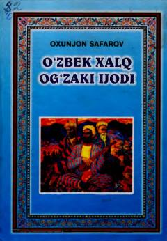

OXOʻzbek xalq ogʻzaki ijodining nazariy va amaliy asoslarini yorituvchi oliy taʼlim darsligi.
Ushbu darslik oʻzbek xalq ogʻzaki ijodining nazariy asoslari, janrlari va tarixiy taraqqiyotini qamrab oladi. Kitobda folklor namunalari, ularning oʻziga xos xususiyatlari hamda oʻzbek folklorshunosligining ilmiy yutuqlari batafsil yoritilgan.